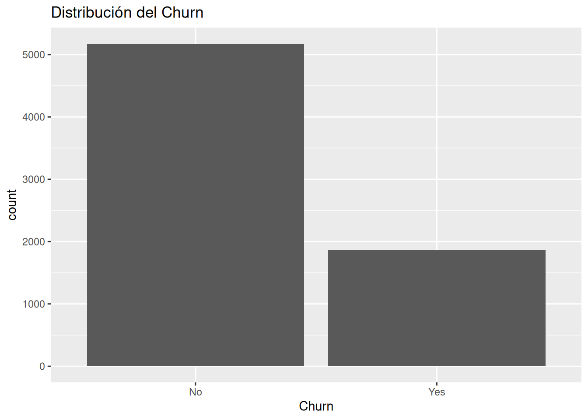
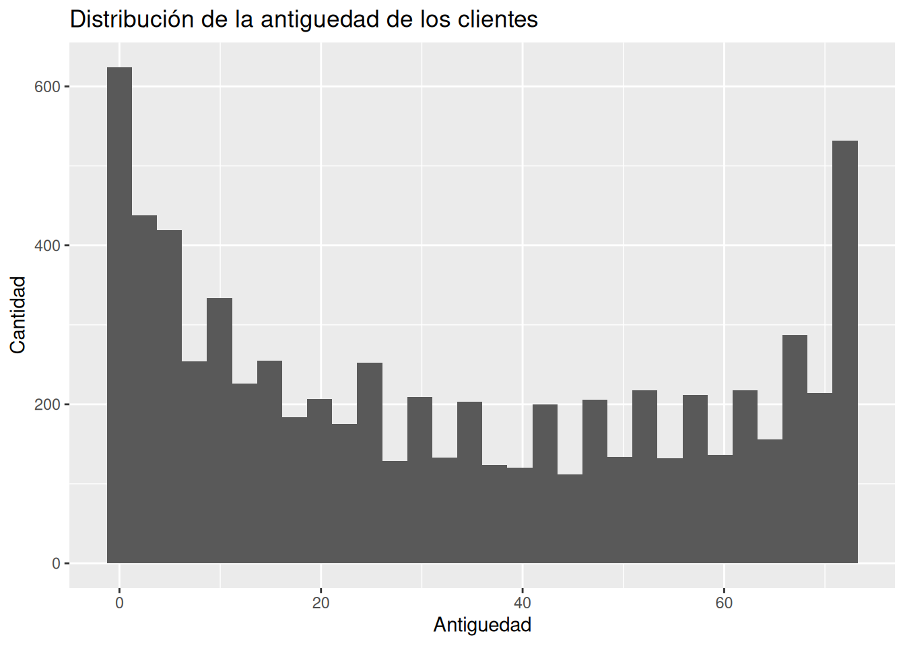
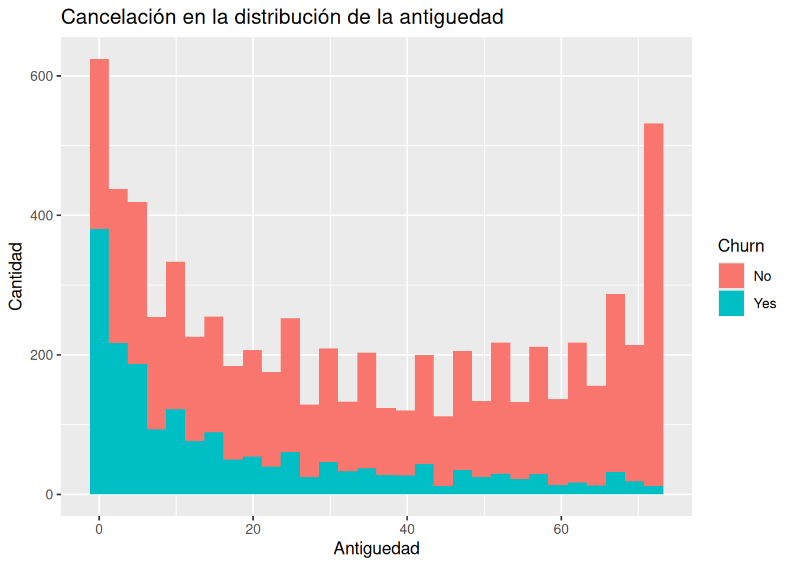
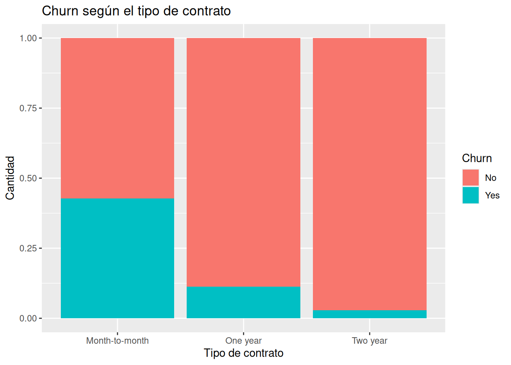
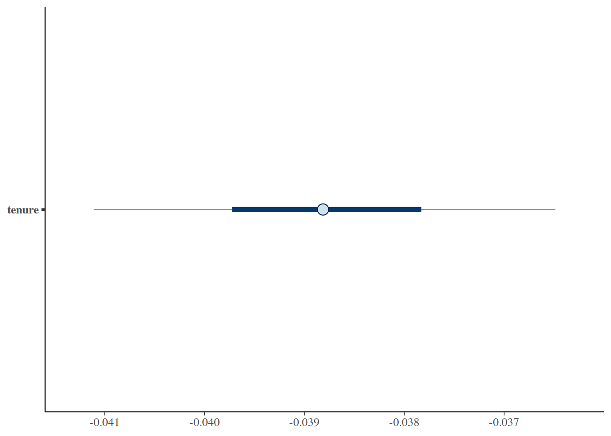
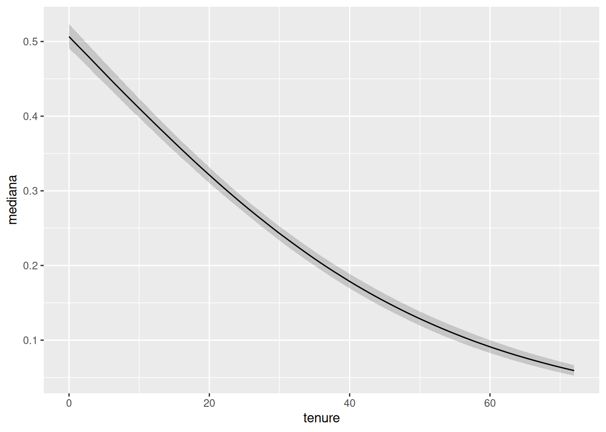

# Ver la distribución del Churn
ggplot(telco, aes(x = Churn)) +
geom_bar() +
labs(
title = "Distribución del Churn"
)
En los capítulos anteriores utilizamos modelos para comprender relaciones entre variables numéricas. Por ejemplo, analizamos cómo cambian las ventas, cómo varían las ganancias o cómo evoluciona una métrica de negocio cuando otra variable cambia.
Sin embargo, muchas decisiones reales no giran alrededor de cantidades continuas.
Con frecuencia las organizaciones se enfrentan a preguntas como:
Estas preguntas tienen algo en común: la respuesta final suele expresarse como un resultado binario.
Por ejemplo:
Resultado
Sí No
o
Estado
Churn No Churn
A primera vista parecería que estos problemas son más simples que predecir ventas o ingresos.
En realidad suelen ser más difíciles.
Los seres humanos son impredecibles. Dos clientes aparentemente similares pueden tomar decisiones completamente distintas.
Por esta razón, en lugar de intentar predecir destinos inevitables, resulta más útil estimar probabilidades.
La regresión logística bayesiana nos permite precisamente eso:
estimar qué tan plausible es que ocurra un determinado evento.
No busca eliminar la incertidumbre.
Busca cuantificarla.
Antes de construir modelos necesitamos entender el problema de negocio.
El término churn describe la pérdida de clientes.
Un cliente entra en churn cuando:
Para una empresa esto puede ser costoso.
Captar nuevos clientes suele requerir:
Por ello muchas organizaciones invierten recursos en retener clientes existentes.
Supongamos que una empresa tiene 10.000 clientes.
Sería imposible llamar personalmente a todos cada semana.
Los recursos son limitados.
Por eso resulta útil responder preguntas como:
La regresión logística ayuda precisamente a priorizar.
No dice:
"Este cliente abandonará."
Dice algo más útil:
"Este cliente parece tener una probabilidad relativamente alta de abandono."
Hasta ahora hemos utilizado modelos lineales para variables continuas.
Por ejemplo:
y = β0 + β1x + ϵ
Este tipo de modelo funciona bien cuando queremos predecir:
Pero aparece un problema cuando intentamos predecir probabilidades.
Supongamos que codificamos:
Churn_num <- if_else( Churn == “Yes”, 1, 0 )
Ahora podríamos intentar ajustar una regresión lineal.
lm( Churn_num ~ tenure, data = telco )
Sin embargo, una recta puede producir predicciones como:
Estas cantidades no tienen sentido como probabilidades.
Una probabilidad debe permanecer siempre entre:
Necesitamos un modelo que respete ese límite.
La solución consiste en transformar una relación lineal en una probabilidad.
La regresión logística toma una combinación de variables y la convierte en un valor entre 0 y 1.
Así obtenemos resultados interpretables como probabilidades.
La idea más importante del capítulo es la siguiente:
El riesgo no es absoluto.
No existen únicamente dos tipos de clientes:
La realidad suele verse más así:
| Cliente | Riesgo |
|---|---|
| A | 0.05 |
| B | 0.25 |
| C | 0.48 |
| D | 0.73 |
| E | 0.91 |
Todos pueden abandonar.
Simplemente algunos parecen más vulnerables que otros.
La función logística puede escribirse como:
P(y=1) = 1 / 1 + e−(β0 + β1x)
No es necesario memorizarla.
Lo importante es entender su papel.
La fórmula recibe una combinación de variables:
Y devuelve:
una probabilidad entre 0 y 1.
En otras palabras:
Entrada: información del cliente.
Salida: riesgo plausible de abandono.

Preguntas:

La variable tenure indica cuántos meses lleva un cliente con la empresa.


Probablemente aparezca uno de los patrones más fuertes del dataset.
Comenzaremos con una sola variable.
Le indica a stan_glm() que:
A medida que aumenta la antigüedad del cliente, el riesgo de abandono parece disminuir o más específicamente: por cada mes de antiguedad, parece disminuir el churn o probabilidad de cancelación en 0.0388 puntos en la escala logística interna (NO en probabilidad, NO significa 3.8% de disminución del churn)
Obsérvese el lenguaje.
No decimos:
❌ “Los clientes antiguos nunca abandonan.”
Decimos:
✅ “Parecen tener menor riesgo.”
También podríamos obetener el intervalo posterior
5% 95%
(Intercept) -0.03609829 0.09296688
tenure -0.04111115 -0.03648721Interpretación: La evidencia bayesiana de que cada mes de antiguedad disminuye el churn es bastante fuerte pues el intervalo no incluye al cero y es negativo. Además la incertidumbre es pequeña
Para pasar los datos del modelo (que están en la escala logística interna) a probabilidades se puede hacer los siguiente:
iterations 1 2 3
[1,] 0.4193887 0.2426769 0.1244624
[2,] 0.4037240 0.2468024 0.1368732
[3,] 0.4187250 0.2394392 0.1209458
[4,] 0.4095082 0.2455129 0.1324603
[5,] 0.4104124 0.2484844 0.1357364
[6,] 0.4140159 0.2479087 0.1332867 1 2 3
0.4105544 0.2429537 0.1287064 Interpretación: Con 10 meses de antiguedad la probabilidad de churn es 41%, con 30 meses de antiguedad la probabilidad de churn es 24% y con 50 meses de antiguedad la probabilidad de churn es 12,8%
Si obtenemos el resumen del modelo podemos observar algunos datos interesantes
# A tibble: 2 × 10
variable mean median sd mad q5 q95 rhat ess_bulk
<chr> <dbl> <dbl> <dbl> <dbl> <dbl> <dbl> <dbl> <dbl>
1 (Intercept) 0.0273 0.0262 0.0406 0.0398 -0.0361 0.0930 1.00 623.
2 tenure -0.0388 -0.0388 0.00141 0.00140 -0.0411 -0.0365 1.00 429.
# ℹ 1 more variable: ess_tail <dbl>Interpretación: la incertidumbre es pequeña pues la desviación estándar del modelo es sólo 0.00140

Interpretación: el gráfico muestra que el punto central o mediana de la disminución del churn por cada mes de antiguedad es negativo y el 50% de la población está entre -0.040 y 0.038 en la escala logística interna y el 90% está entre -0.041 y 0.036.
# A tibble: 6 × 1
tenure
<dbl>
1 0
2 0.727
3 1.45
4 2.18
5 2.91
6 3.64
iterations 1 2 3 4
[1,] 0.5202650 0.5128843 0.5054981 0.4981095
[2,] 0.4932283 0.4866331 0.4800427 0.4734592
[3,] 0.5214528 0.5139374 0.5064157 0.4988911
[4,] 0.5030864 0.4962075 0.4893301 0.4824567
[5,] 0.5024912 0.4957236 0.4889575 0.4821955
[6,] 0.5084533 0.5015231 0.4945923 0.4876636
Este gráfico resume gran parte del espíritu bayesiano.
Muestra:
No necesitamos profundizar en odds ratios.
Para este libro basta responder:
Un error frecuente consiste en pensar:
0.80 significa que el cliente abandonará.
No.
Significa algo diferente.
Si observáramos muchos clientes similares, aproximadamente el 80% podría abandonar.
La probabilidad describe incertidumbre.
No destino.
La clasificación tradicional suele transmitir una ilusión de certeza.
Cliente A:
Cliente B:
La realidad es más compleja.
Los clientes cambian.
Las circunstancias cambian.
Los mercados cambian.
La regresión logística bayesiana reconoce explícitamente esa incertidumbre.
En lugar de ocultarla, la incorpora al análisis.
Construya un modelo:
Churn_num ~ MonthlyCharges
¿Cómo cambia el riesgo al aumentar los cargos mensuales?
Construya un modelo:
Churn_num ~ Contract
¿Qué tipo de contrato parece asociado con menor riesgo?
Genere una curva logística para MonthlyCharges.
Interprete la incertidumbre posterior.
Compare dos clientes:
tenure = 5
tenure = 60
¿Quién parece tener mayor riesgo?
¿Con cuánta certeza puede afirmarlo?
Explique con sus propias palabras la diferencia entre: